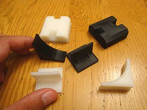
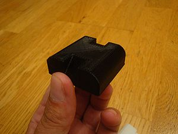
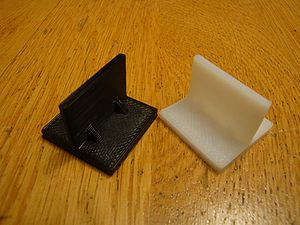
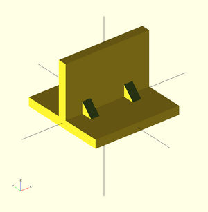
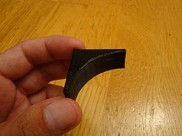
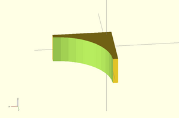

| Esquinas biseladas en Thingiverse |
|---|


(click para ampliar)
Contenido
[ocultar]Introducción
Librería en OpenScad para biselar esquinas tanto cóncavas como convexas. El biselado de las esquinas cóncavas permite construir refuerzos fácilmente para las piezas que se unen ortogonalmente, así como hacer amuedos.
Instrucciones
Esta biblioteca es parte de las herramientas Obiscad. Ahí se puede encontrar la API y explicación de su uso
Descarga
| bevel_02_cube.stl | Caja con los bordes superiores biselados de diferentes maneras |
| bevel_03_buttress.stl | Pieza con 2 refuerzos |
| bevel_01_concave_corner.stl | Esquina cóncava redondeada |
| bevel-library-openscad.zip | Fuentes en Openscad (las últimas versiones están en el repositorio) |
Fotos
| Álbum de fotos completo |
|---|
|  Pieza con esquinas biseladas, de diferentes maneras (click para ampliar) |
 Pieza biselada. Diseño en Openscad (click para ampliar) |
|  Piezas con 2 refuerzos (click para ampliar) |
 Pieza en Openscad (click para ampliar) |
|  Esquina cóncava redondeada. (click para ampliar) |
 Pieza en OpenScad (click para ampliar) |


Repositorio
- Repositorio Git: https://github.com/Obijuan/obiscad
Autor
Licencia
| |
Agradecimientos
- A Miguel Angel de Frutos por su ayuda y descubrirme el mundo de las estructuras y los refuerzos. ¡Gracias!
Enlaces
Noticias
- 13/Septiembre/2012: Primera versión de esta página